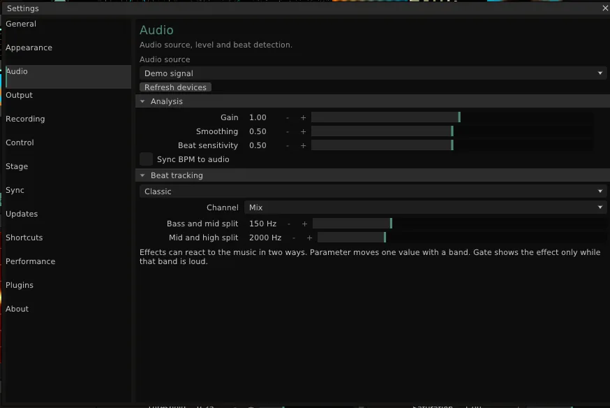

Contents
Getting started
- Welcome to NyrexVJ
- Installing and first start
- The window at a glance
- Your first show in five minutes
Playing visuals
- The clip grid
- Decks and transitions
- Layers and blending
- The Clip window
- Effects
- The Library
- Presets and sessions
- The Master window
Music and motion
Your own content
- Video and image clips
- Your own shaders
- 3D models
- The Clip Creator
- Text, particles and effect chains
- The node effect editor
- Live sources: Spout, NDI and cameras
Output and recording
Live control and shows
- Control: MIDI, OSC and the web page
- Show sync and timecode
- The show timeline
- Stage: DMX, VRSL and VRChat
- Plugins
Reference and help
Manual / Music and motion
Audio and music
#Choosing a source
Open the Audio tab in the Browser, or Settings, Audio, or the Audio menu.
| Source | What it listens to |
|---|---|
| System audio | Whatever your computer plays, for example Rekordbox, Serato, Spotify or a browser. On Linux this is System audio (default output) and every monitor source of PulseAudio or PipeWire |
| Input | A microphone or a line-in. On Linux Default input and every other PulseAudio or PipeWire source |
| Demo signal | A built-in beat, so you can build looks without music |
| Off | Nothing. Clips and effects follow the BPM clock instead |
The tab shows the live spectrum, the meters for Bass, Mid, High and Level, the beat detection and a detected tempo. If the chosen device delivers no sound for a few seconds, the tab and the status bar say so and suggest to play something or to pick another source.

#Analysis settings
Gain raises or lowers the level that the analysis sees, Smoothing makes the bands calmer, and Beat sensitivity decides how easily a beat is found. They are in the Audio tab and in Settings, Audio. If the meters hit the top all the time, lower the gain; if the beat is found in every sound, lower the sensitivity.
Detected tempo shows the estimate, and Use takes it over as the tempo. Sync BPM to audio keeps the tempo locked to the detected beat all the time. It works best with music that has a clear kick. For a steady show with a DJ it is often better to tap the tempo yourself or to follow a clock, see Show sync and timecode.


#Making visuals react
Reactivity is set in three places:
- The Layer window has two slots that move opacity, scale, speed, hue, brightness or saturation with a band.
- The Master window has the same slots for the final picture.
- Every effect slot has a band and a mode, see Effects.
Bass, Mid, High and Level are the strength of those parts of the spectrum from 0 to 1, Kick is a short pulse on the bass beats. Choose Bass for slow breathing, Kick for hits, High for sparkle.
Some clips draw the real sound: Bars, Equalizer, Spectrum Circle, Oscilloscope, Spectrum Warp and the Oscilloscope effect show the real spectrum or waveform. Without an audio source they run on a virtual beat that follows the BPM.
Found a mistake or something missing? Tell us on GitHub. The same manual is built into the program, so you have it without internet. Open it with F1 or from the Help menu, then User manual.